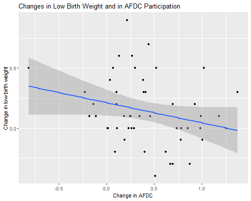

{% include r.css %}


<div id="longitudinal-linear-model" class="section level2">
<h2>8.2 Longitudinal Linear Model</h2>
<p>Here’s an interesting example where fixed-effects gives a very
different answer from OLS and random-effects models. The data come from
Wooldridge’s text and concern state-level data on the percentage of
births classified as low birth weight and the percentage of the
population in the AFDC welfare program in 1987 and 1990. The data are
available from the Stata website.</p>
<pre class="r"><code>&gt; library(haven)
&gt; lbw &lt;- read_dta(&quot;https://www.stata.com/data/jwooldridge/eacsap/lowbirth.dta&quot;)</code></pre>
<div id="ols" class="section level3">
<h3>OLS</h3>
<p>Here’s a regression of low birth weight on AFDC with a dummy for 1990
(time trends) and controls for log physicians per capita, log beds per
capita, log per capita income, and log population.</p>
<pre class="r"><code>&gt; ols &lt;- lm(lowbrth ~ d90 + afdcprc + lphypc + lbedspc + lpcinc + lpopul, data = lbw)
&gt; summary(ols)</code></pre>
<pre><code>
Call:
lm(formula = lowbrth ~ d90 + afdcprc + lphypc + lbedspc + lpcinc + 
    lpopul, data = lbw)

Residuals:
    Min      1Q  Median      3Q     Max 
-1.7958 -0.7914 -0.1507  0.8642  2.0121 

Coefficients:
            Estimate Std. Error t value Pr(&gt;|t|)    
(Intercept) 26.57786    7.15802   3.713 0.000349 ***
d90          0.57971    0.27612   2.099 0.038484 *  
afdcprc      0.09559    0.09218   1.037 0.302413    
lphypc       0.30806    0.71546   0.431 0.667768    
lbedspc      0.27900    0.51303   0.544 0.587854    
lpcinc      -2.49469    0.97830  -2.550 0.012407 *  
lpopul       0.73928    0.70232   1.053 0.295237    
---
Signif. codes:  0 &#39;***&#39; 0.001 &#39;**&#39; 0.01 &#39;*&#39; 0.05 &#39;.&#39; 0.1 &#39; &#39; 1

Residual standard error: 1.041 on 93 degrees of freedom
Multiple R-squared:  0.2509,    Adjusted R-squared:  0.2026 
F-statistic: 5.191 on 6 and 93 DF,  p-value: 0.0001205</code></pre>
<p>It seems as if AFDC has a pernicious effect on low birth weight: each
percent in AFDC is associated with an extra 1/10-th of one percent with
low birth weight. A scatterplot shows a positive correlation:</p>
<pre class="r"><code>&gt; library(ggplot2)
&gt; png(&quot;afdc1r.png&quot;, width=500, height=400)
&gt; ggplot(lbw, aes(afdcprc, lowbrth, color=as.factor(year))) + geom_point() +
+   ggtitle(&quot;Low Birth Weight and AFDC Participation&quot;) +
+   labs(x=&quot;Percent low birth weight&quot;, y=&quot;Percent in AFDC&quot;)
&gt; dev.off()</code></pre>
<pre><code>png 
  2 </code></pre>
<p></p>
</div>
<div id="random-effects" class="section level3">
<h3>Random-Effects</h3>
<p>Fitting a random-effects model improves things a bit.</p>
<pre class="r"><code>&gt; library(lme4)
&gt; lbw$stateabb &lt;- as.factor(lbw$stateabb)
&gt; re &lt;- lmer(lowbrth ~ d90 + afdcprc + lphypc + lbedspc + lpcinc + lpopul + 
+   (1 | stateabb), REML = FALSE, data=lbw)
&gt; summary(re, corr = FALSE)</code></pre>
<pre><code>Linear mixed model fit by maximum likelihood  [&#39;lmerMod&#39;]
Formula: lowbrth ~ d90 + afdcprc + lphypc + lbedspc + lpcinc + lpopul +  
    (1 | stateabb)
   Data: lbw

     AIC      BIC   logLik deviance df.resid 
   177.5    200.9    -79.7    159.5       91 

Scaled residuals: 
     Min       1Q   Median       3Q      Max 
-2.09964 -0.48600  0.05563  0.42811  2.35192 

Random effects:
 Groups   Name        Variance Std.Dev.
 stateabb (Intercept) 1.03585  1.0178  
 Residual             0.03941  0.1985  
Number of obs: 100, groups:  stateabb, 50

Fixed effects:
            Estimate Std. Error t value
(Intercept) 20.12827    7.76345   2.593
d90          0.50678    0.18374   2.758
afdcprc     -0.08236    0.07788  -1.057
lphypc       0.29263    0.82938   0.353
lbedspc      0.42912    0.50881   0.843
lpcinc      -1.68180    0.95425  -1.762
lpopul       0.74900    0.80042   0.936</code></pre>
<pre class="r"><code>&gt; s2u &lt;- as.numeric(VarCorr(re))
&gt; s2e &lt;- sigma(re)^2
&gt; s2u/(s2u + s2e) # icc</code></pre>
<pre><code>[1] 0.9633458</code></pre>
<p>The effect of AFDC is now negative, as we would expect, but not
significant. The intra-state correlation over the two years is a
remarkable 0.96; persistent state characteristics account for most of
the variation in the percent with low birth weight after controlling for
AFDC participation and all other variables.</p>
</div>
<div id="fixed-effects" class="section level3">
<h3>Fixed-Effects</h3>
<p>Fitting a fixed-effects model gives much more reasonable results:</p>
<pre class="r"><code>&gt; library(plm)
&gt; fe &lt;- plm(lowbrth ~ d90 + afdcprc + lphypc + lbedspc + lpcinc + lpopul, 
+   data=lbw, index = &quot;stateabb&quot;, method = &quot;within&quot;)
&gt; summary(fe)</code></pre>
<pre><code>Oneway (individual) effect Within Model

Call:
plm(formula = lowbrth ~ d90 + afdcprc + lphypc + lbedspc + lpcinc + 
    lpopul, data = lbw, index = &quot;stateabb&quot;, method = &quot;within&quot;)

Balanced Panel: n = 50, T = 2, N = 100

Residuals:
     Min.   1st Qu.    Median   3rd Qu.      Max. 
-0.287933 -0.078157  0.000000  0.078157  0.287933 

Coefficients:
         Estimate Std. Error t-value Pr(&gt;|t|)  
d90      0.106016   0.309066  0.3430  0.73322  
afdcprc -0.176076   0.090373 -1.9483  0.05777 .
lphypc   5.894509   2.816689  2.0927  0.04218 *
lbedspc -1.576195   0.885211 -1.7806  0.08189 .
lpcinc  -0.845527   1.356773 -0.6232  0.53638  
lpopul   3.441116   2.872175  1.1981  0.23730  
---
Signif. codes:  0 &#39;***&#39; 0.001 &#39;**&#39; 0.01 &#39;*&#39; 0.05 &#39;.&#39; 0.1 &#39; &#39; 1

Total Sum of Squares:    2.435
Residual Sum of Squares: 1.5001
R-Squared:      0.38393
Adj. R-Squared: -0.38616
F-statistic: 4.57005 on 6 and 44 DF, p-value: 0.0011004</code></pre>
<p>Now every percent increase in AFDC is associated with a
<em>decline</em> of almost 2/10-th of a percentage point in low birth
weight. The coefficient of log physicians per capita is highly suspect;
this is due to high correlation with the other predictors, most notably
the log of population. In fact once we have state fixed effects we don’t
really need the other controls:</p>
<pre class="r"><code>&gt; fe2 &lt;- plm(lowbrth ~ d90 + afdcprc, 
+   data=lbw, index = &quot;stateabb&quot;, method = &quot;within&quot;)
&gt; summary(fe2)</code></pre>
<pre><code>Oneway (individual) effect Within Model

Call:
plm(formula = lowbrth ~ d90 + afdcprc, data = lbw, index = &quot;stateabb&quot;, 
    method = &quot;within&quot;)

Balanced Panel: n = 50, T = 2, N = 100

Residuals:
     Min.   1st Qu.    Median   3rd Qu.      Max. 
-0.362046 -0.082391  0.000000  0.082391  0.362046 

Coefficients:
         Estimate Std. Error t-value  Pr(&gt;|t|)    
d90      0.212474   0.054238  3.9175 0.0002828 ***
afdcprc -0.168598   0.090799 -1.8568 0.0694771 .  
---
Signif. codes:  0 &#39;***&#39; 0.001 &#39;**&#39; 0.01 &#39;*&#39; 0.05 &#39;.&#39; 0.1 &#39; &#39; 1

Total Sum of Squares:    2.435
Residual Sum of Squares: 1.8015
R-Squared:      0.26016
Adj. R-Squared: -0.52591
F-statistic: 8.43965 on 2 and 48 DF, p-value: 0.00072317</code></pre>
<p>One way to see what’s going on is to compute and plot differences in
the percent with low birth weight and the percent with AFDC. We could
reshape to wide, but I will keep the data in long format:</p>
<pre class="r"><code>&gt; library(dplyr)
&gt; y90 &lt;- filter(lbw, year == 1990)
&gt; y87 &lt;- filter(lbw, year == 1987)
&gt; lbwd &lt;- data.frame( lowbrthd = y90$lowbrth - y87$lowbrth,
+   afdcd = y90$afdcprc - y87$afdcprc)
&gt; png(&quot;afdc2r.png&quot;, width = 500, height = 400)
&gt; ggplot(lbwd, aes(afdcd, lowbrthd)) + geom_point() + stat_smooth(method=&quot;lm&quot;) +
+   ggtitle(&quot;Changes in Low Birth Weight and in AFDC Participation&quot;) +
+   labs(x=&quot;Change in AFDC&quot;, y=&quot;Change in low birth weight&quot;)</code></pre>
<pre><code>`geom_smooth()` using formula &#39;y ~ x&#39;</code></pre>
<pre class="r"><code>&gt; dev.off()</code></pre>
<pre><code>png 
  2 </code></pre>
<p></p>
</div>
<div id="fe-and-differencing" class="section level3">
<h3>FE and Differencing</h3>
<p>Let us verify that we get the same results using regression on the
differences. The constant is the coefficient of <code>d90</code> and the
slope is the coefficient of <code>afdcprc</code>:</p>
<pre class="r"><code>&gt; fe_diff &lt;- lm(lowbrthd ~ afdcd, data = lbwd)
&gt; summary(fe_diff)</code></pre>
<pre><code>
Call:
lm(formula = lowbrthd ~ afdcd, data = lbwd)

Residuals:
     Min       1Q   Median       3Q      Max 
-0.52669 -0.17226 -0.05066  0.15256  0.72409 

Coefficients:
            Estimate Std. Error t value Pr(&gt;|t|)    
(Intercept)  0.21247    0.05424   3.917 0.000283 ***
afdcd       -0.16860    0.09080  -1.857 0.069477 .  
---
Signif. codes:  0 &#39;***&#39; 0.001 &#39;**&#39; 0.01 &#39;*&#39; 0.05 &#39;.&#39; 0.1 &#39; &#39; 1

Residual standard error: 0.274 on 48 degrees of freedom
Multiple R-squared:  0.06702,   Adjusted R-squared:  0.04758 
F-statistic: 3.448 on 1 and 48 DF,  p-value: 0.06948</code></pre>
</div>
<div id="fe-and-dummy-variables" class="section level3">
<h3>FE and Dummy Variables</h3>
<p>Finally we verify that we get the same results using state
dummies.</p>
<pre class="r"><code>&gt; fe_dummy &lt;- lm(lowbrth ~ d90 + afdcprc + stateabb, data=lbw)
&gt; summary(fe_dummy)$coefficients[1:3,]</code></pre>
<pre><code>              Estimate Std. Error   t value     Pr(&gt;|t|)
(Intercept)  5.3672779 0.37054239 14.484923 3.804546e-19
d90          0.2124736 0.05423772  3.917451 2.827621e-04
afdcprc     -0.1685980 0.09079865 -1.856834 6.947714e-02</code></pre>
<p>I just omitted from the listing the state dummies</p>
<p><small>Updated fall 2022</small></p>
</div>
</div>
